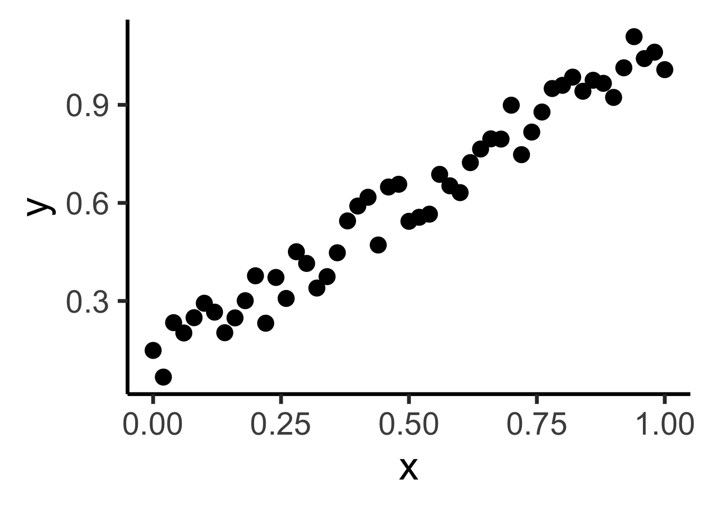
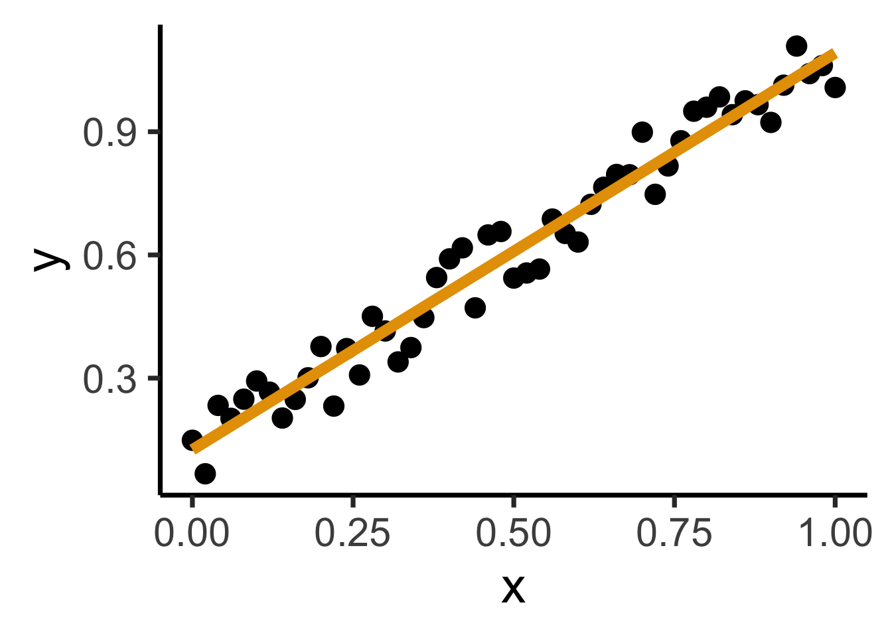
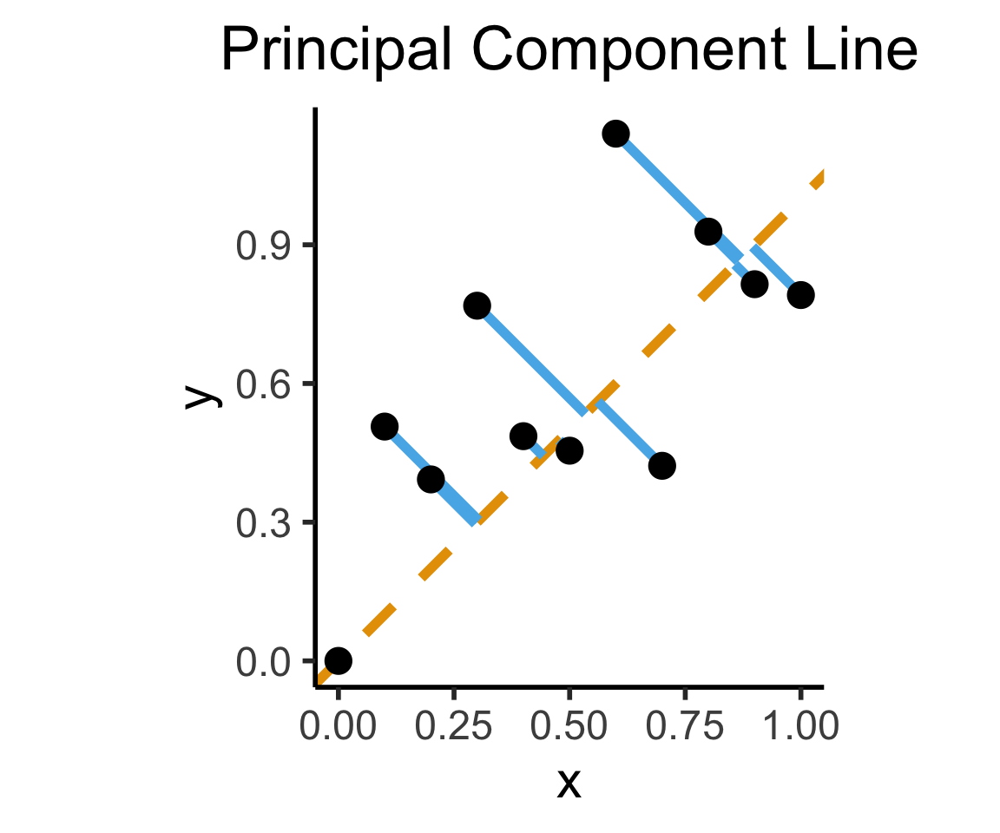
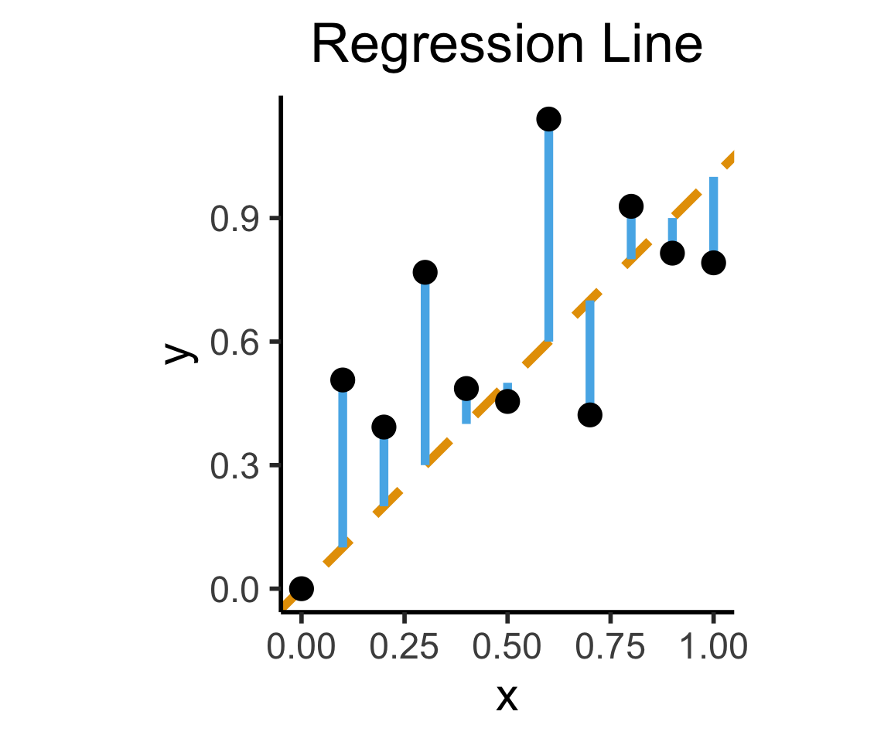
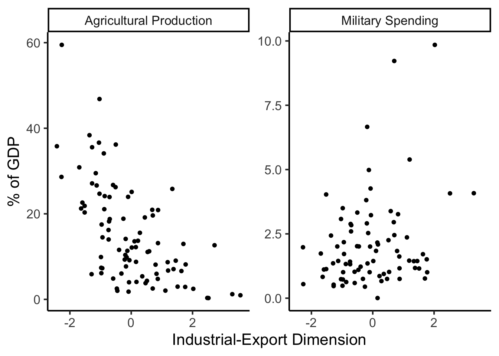
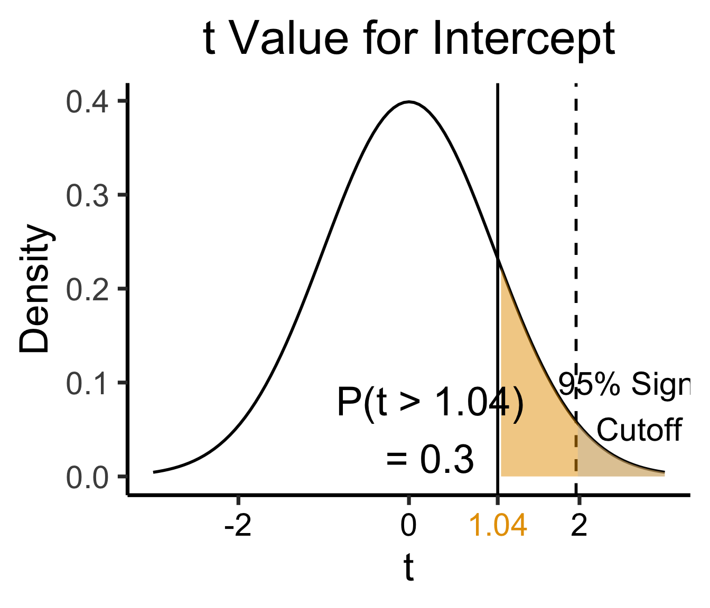
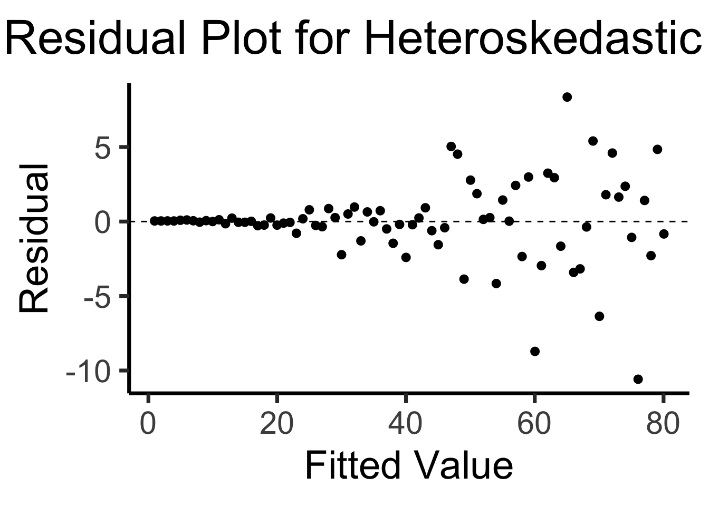
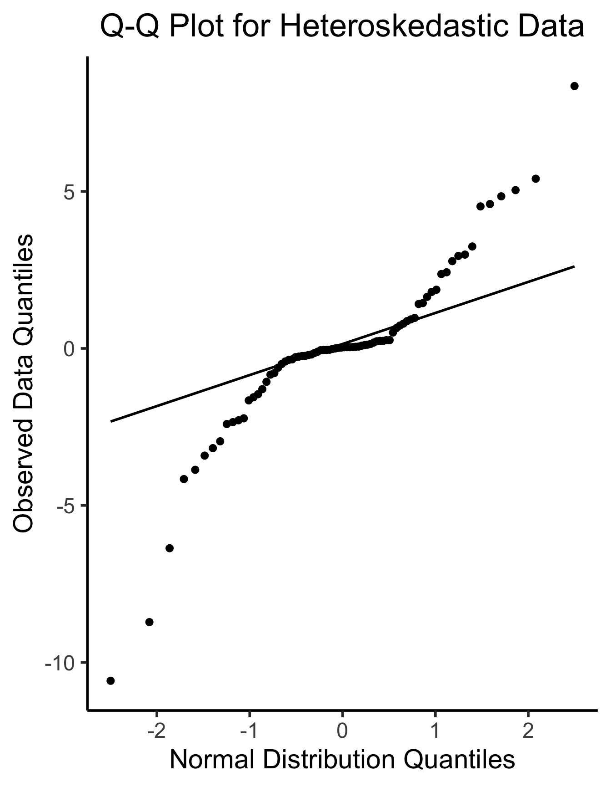

Code
source("../../dsan-globals/_globals.r")DSAN 5300: Statistical Learning
source("../../dsan-globals/_globals.r")\[ \DeclareMathOperator*{\argmax}{argmax} \DeclareMathOperator*{\argmin}{argmin} \newcommand{\bigexp}[1]{\exp\mkern-4mu\left[ #1 \right]} \newcommand{\bigexpect}[1]{\mathbb{E}\mkern-4mu \left[ #1 \right]} \newcommand{\definedas}{\overset{\small\text{def}}{=}} \newcommand{\definedalign}{\overset{\phantom{\text{defn}}}{=}} \newcommand{\eqeventual}{\overset{\text{eventually}}{=}} \newcommand{\Err}{\text{Err}} \newcommand{\expect}[1]{\mathbb{E}[#1]} \newcommand{\expectsq}[1]{\mathbb{E}^2[#1]} \newcommand{\fw}[1]{\texttt{#1}} \newcommand{\given}{\mid} \newcommand{\green}[1]{\color{green}{#1}} \newcommand{\heads}{\outcome{heads}} \newcommand{\iid}{\overset{\text{\small{iid}}}{\sim}} \newcommand{\lik}{\mathcal{L}} \newcommand{\loglik}{\ell} \DeclareMathOperator*{\maximize}{maximize} \DeclareMathOperator*{\minimize}{minimize} \newcommand{\mle}{\textsf{ML}} \newcommand{\nimplies}{\;\not\!\!\!\!\implies} \newcommand{\orange}[1]{\color{orange}{#1}} \newcommand{\outcome}[1]{\textsf{#1}} \newcommand{\param}[1]{{\color{purple} #1}} \newcommand{\pgsamplespace}{\{\green{1},\green{2},\green{3},\purp{4},\purp{5},\purp{6}\}} \newcommand{\prob}[1]{P\left( #1 \right)} \newcommand{\purp}[1]{\color{purple}{#1}} \newcommand{\sign}{\text{Sign}} \newcommand{\spacecap}{\; \cap \;} \newcommand{\spacewedge}{\; \wedge \;} \newcommand{\tails}{\outcome{tails}} \newcommand{\Var}[1]{\text{Var}[#1]} \newcommand{\bigVar}[1]{\text{Var}\mkern-4mu \left[ #1 \right]} \]
library(ggplot2)
library(tibble)
x_data <- seq(from=0, to=1, by=0.02)
num_x <- length(x_data)
y_data <- x_data + runif(num_x, 0, 0.2)
reg_df <- tibble(x=x_data, y=y_data)
ggplot(reg_df, aes(x=x, y=y)) +
geom_point(size=g_pointsize) +
dsan_theme("quarter")
psychology
trending_flat
ggplot(reg_df, aes(x=x, y=y)) +
geom_point(size=g_pointsize) +
geom_smooth(method = "lm", se = FALSE, color = cbPalette[1], formula = y ~ x, linewidth = g_linewidth*3) +
dsan_theme("quarter")
Find a line \(\widehat{y} = mx + b\) that best predicts \(Y\) for given values of \(X\)
N <- 11
x <- seq(from = 0, to = 1, by = 1 / (N - 1))
y <- x + rnorm(N, 0, 0.25)
mean_y <- mean(y)
spread <- y - mean_y
df <- tibble(x = x, y = y, spread = spread)
ggplot(df, aes(x=x, y=y)) +
geom_abline(slope=1, intercept=0, linetype="dashed", color=cbPalette[1], linewidth=g_linewidth*2) +
geom_segment(xend=(x+y)/2, yend=(x+y)/2, linewidth=g_linewidth*2, color=cbPalette[2]) +
geom_point(size=g_pointsize) +
coord_equal() +
dsan_theme("half") +
labs(
title = "Principal Component Line"
)
ggplot(df, aes(x=x, y=y)) +
geom_abline(slope=1, intercept=0, linetype="dashed", color=cbPalette[1], linewidth=g_linewidth*2) +
geom_segment(xend=x, yend=x, linewidth=g_linewidth*2, color=cbPalette[2]) +
geom_point(size=g_pointsize) +
coord_equal() +
dsan_theme("half") +
labs(
title = "Regression Line"
)

On the difference between these two lines, and why it matters, I cannot recommend Gelman and Hill (2007) enough!
Principal Component Line can be used to project the data onto its dimension of highest variance
More simply: PCA can discover meaningful axes in data (unsupervised learning / exploratory data analysis settings)
library(readr)
library(ggplot2)
gdp_df <- read_csv("assets/gdp_pca.csv")
dist_to_line <- function(x0, y0, a, c) {
numer <- abs(a * x0 - y0 + c)
denom <- sqrt(a * a + 1)
return(numer / denom)
}
# Finding PCA line for industrial vs. exports
x <- gdp_df$industrial
y <- gdp_df$exports
lossFn <- function(lineParams, x0, y0) {
a <- lineParams[1]
c <- lineParams[2]
return(sum(dist_to_line(x0, y0, a, c)))
}
o <- optim(c(0, 0), lossFn, x0 = x, y0 = y)
ggplot(gdp_df, aes(x = industrial, y = exports)) +
geom_point(size=g_pointsize/2) +
geom_abline(aes(slope = o$par[1], intercept = o$par[2], color="pca"), linewidth=g_linewidth, show.legend = TRUE) +
geom_smooth(aes(color="lm"), method = "lm", se = FALSE, linewidth=g_linewidth, key_glyph = "blank") +
scale_color_manual(element_blank(), values=c("pca"=cbPalette[2],"lm"=cbPalette[1]), labels=c("Regression","PCA")) +
dsan_theme("half") +
remove_legend_title() +
labs(
title = "PCA Line vs. Regression Line",
x = "Industrial Production (% of GDP)",
y = "Exports (% of GDP)"
)
See https://juliasilge.com/blog/un-voting/ for an amazing blog post using PCA, with 2 dimensions, to explore UN voting patterns!
ggplot(gdp_df, aes(pc1, .fittedPC2)) +
geom_point(size = g_pointsize/2) +
geom_hline(aes(yintercept=0, color='PCA Line'), linetype='solid', size=g_linesize) +
geom_rug(sides = "b", linewidth=g_linewidth/1.2, length = unit(0.1, "npc"), color=cbPalette[3]) +
expand_limits(y=-1.6) +
scale_color_manual(element_blank(), values=c("PCA Line"=cbPalette[2])) +
dsan_theme("full") +
remove_legend_title() +
labs(
title = "Exports vs. Industrial Production in Principal Component Space",
x = "First Principal Component (Dimension of Greatest Variance)",
y = "Second Principal Component"
)
library(dplyr)
library(tidyr)
plot_df <- gdp_df %>% select(c(country_code, pc1, agriculture, military))
long_df <- plot_df %>% pivot_longer(!c(country_code, pc1), names_to = "var", values_to = "val")
long_df <- long_df |> mutate(
var = case_match(
var,
"agriculture" ~ "Agricultural Production",
"military" ~ "Military Spending"
)
)
ggplot(long_df, aes(x = pc1, y = val, facet = var)) +
geom_point() +
facet_wrap(vars(var), scales = "free") +
dsan_theme("full") +
labs(
x = "Industrial-Export Dimension",
y = "% of GDP"
)
Given data \((X, Y)\), we estimate \(\widehat{y} = \widehat{\beta_0} + \widehat{\beta_1}x\), hypothesizing that:
\[ \widehat{y} = \underbrace{\widehat{\beta_0}}_{\small\begin{array}{c}\text{Predicted} \\[-5mm] \text{intercept}\end{array}} + \underbrace{\widehat{\beta_1}}_{\small\begin{array}{c}\text{Predicted} \\[-4mm] \text{slope}\end{array}}\cdot x \]
is chosen so that
\[ \theta = \left(\widehat{\beta_0}, \widehat{\beta_1}\right) = \argmin_{\beta_0, \beta_1}\left[ \sum_{x_i \in X} \left(\overbrace{\widehat{y}(x_i)}^{\small\text{Predicted }y} - \overbrace{\expect{Y \mid X = x_i}}^{\small \text{Avg. }y\text{ when }x = x_i}\right)^2 \right] \]
Rlin_model <- lm(military ~ industrial, data=gdp_df)
summary(lin_model)
Call:
lm(formula = military ~ industrial, data = gdp_df)
Residuals:
Min 1Q Median 3Q Max
-2.3354 -1.0997 -0.3870 0.6081 6.7508
Coefficients:
Estimate Std. Error t value Pr(>|t|)
(Intercept) 0.61969 0.59526 1.041 0.3010
industrial 0.05253 0.02019 2.602 0.0111 *
---
Signif. codes: 0 '***' 0.001 '**' 0.01 '*' 0.05 '.' 0.1 ' ' 1
Residual standard error: 1.671 on 79 degrees of freedom
(8 observations deleted due to missingness)
Multiple R-squared: 0.07895, Adjusted R-squared: 0.06729
F-statistic: 6.771 on 1 and 79 DF, p-value: 0.01106lm Syntaxlm(
formula = dependent ~ independent + controls,
data = my_df
)Call:
lm(formula = military ~ industrial, data = gdp_df)
Residuals:
Min 1Q Median 3Q Max
-2.3354 -1.0997 -0.3870 0.6081 6.7508
Coefficients:
Estimate Std. Error t value Pr(>|t|)
(Intercept) 0.61969 0.59526 1.041 0.3010
industrial 0.05253 0.02019 2.602 0.0111 *
--- Signif. codes: 0 '***' 0.001 '**' 0.01 '*' 0.05 '.' 0.1 ' ' 1 Residual standard error: 1.671 on 79 degrees of freedom (8 observations deleted due to missingness) Multiple R-squared: 0.07895, Adjusted R-squared: 0.06729 F-statistic: 6.771 on 1 and 79 DF, p-value: 0.01106
| Estimate | Std. Error | t value | Pr(>|t|) | ||
|---|---|---|---|---|---|
| (Intercept) | 0.61969 | 0.59526 | 1.041 | 0.3010 | |
| industrial | 0.05253 | 0.02019 | 2.602 | 0.0111 | * |
| \(\widehat{\beta}\) | Uncertainty | Test statistic | How extreme is test stat? | Statistical significance |
\[ \widehat{y} \approx \class{cb1}{\overset{\beta_0}{\underset{\small \pm 0.595}{0.620}}} + \class{cb2}{\overset{\beta_1}{\underset{\small \pm 0.020}{0.053}}} \cdot x \]
| Estimate | Std. Error | t value | Pr(>|t|) | ||
|---|---|---|---|---|---|
| (Intercept) | 0.61969 | 0.59526 | 1.041 | 0.3010 | |
| industrial | 0.05253 | 0.02019 | 2.602 | 0.0111 | * |
| \(\widehat{\beta}\) | Uncertainty | Test statistic | How extreme is test stat? | Statistical significance |
library(ggplot2)
int_tstat <- 1.041
int_tstat_str <- sprintf("%.02f", int_tstat)
label_df_int <- tribble(
~x, ~y, ~label,
0.25, 0.05, paste0("P(t > ",int_tstat_str,")\n= 0.3")
)
label_df_signif_int <- tribble(
~x, ~y, ~label,
2.7, 0.075, "95% Signif.\nCutoff"
)
funcShaded <- function(x, lower_bound, upper_bound){
y <- dnorm(x)
y[x < lower_bound | x > upper_bound] <- NA
return(y)
}
funcShadedIntercept <- function(x) funcShaded(x, int_tstat, Inf)
funcShadedSignif <- function(x) funcShaded(x, 1.96, Inf)
ggplot(data=data.frame(x=c(-3,3)), aes(x=x)) +
stat_function(fun=dnorm, linewidth=g_linewidth) +
geom_vline(aes(xintercept=int_tstat), linewidth=g_linewidth) +
geom_vline(aes(xintercept = 1.96), linewidth=g_linewidth, linetype="dashed") +
stat_function(fun = funcShadedIntercept, geom = "area", fill = cbPalette[1], alpha = 0.5) +
stat_function(fun = funcShadedSignif, geom = "area", fill = "grey", alpha = 0.333) +
geom_text(label_df_int, mapping = aes(x = x, y = y, label = label), size = 10) +
geom_text(label_df_signif_int, mapping = aes(x = x, y = y, label = label), size = 8) +
# Add single additional tick
scale_x_continuous(breaks=c(-2, 0, int_tstat, 2), labels=c("-2","0",int_tstat_str,"2")) +
dsan_theme("quarter") +
labs(
title = "t Value for Intercept",
x = "t",
y = "Density"
) +
theme(axis.text.x = element_text(colour = c("black", "black", cbPalette[1], "black")))
library(ggplot2)
coef_tstat <- 2.602
coef_tstat_str <- sprintf("%.02f", coef_tstat)
label_df_coef <- tribble(
~x, ~y, ~label,
3.65, 0.06, paste0("P(t > ",coef_tstat_str,")\n= 0.01")
)
label_df_signif_coef <- tribble(
~x, ~y, ~label,
1.05, 0.03, "95% Signif.\nCutoff"
)
funcShadedCoef <- function(x) funcShaded(x, coef_tstat, Inf)
ggplot(data=data.frame(x=c(-4,4)), aes(x=x)) +
stat_function(fun=dnorm, linewidth=g_linewidth) +
geom_vline(aes(xintercept=coef_tstat), linetype="solid", linewidth=g_linewidth) +
geom_vline(aes(xintercept=1.96), linetype="dashed", linewidth=g_linewidth) +
stat_function(fun = funcShadedCoef, geom = "area", fill = cbPalette[2], alpha = 0.5) +
stat_function(fun = funcShadedSignif, geom = "area", fill = "grey", alpha = 0.333) +
# Label shaded area
geom_text(label_df_coef, mapping = aes(x = x, y = y, label = label), size = 10) +
# Label significance cutoff
geom_text(label_df_signif_coef, mapping = aes(x = x, y = y, label = label), size = 8) +
coord_cartesian(clip = "off") +
# Add single additional tick
scale_x_continuous(breaks=c(-4, -2, 0, 2, coef_tstat, 4), labels=c("-4", "-2","0", "2", coef_tstat_str,"4")) +
dsan_theme("quarter") +
labs(
title = "t Value for Coefficient",
x = "t",
y = "Density"
) +
theme(axis.text.x = element_text(colour = c("black", "black", "black", "black", cbPalette[2], "black")))
library(broom)
gdp_resid_df <- augment(lin_model)
ggplot(gdp_resid_df, aes(x = .fitted, y = .resid)) +
geom_point(size = g_pointsize/2) +
geom_hline(yintercept=0, linetype="dashed") +
dsan_theme("quarter") +
labs(
title = "Residual Plot for Industrial ~ Military",
x = "Fitted Value",
y = "Residual"
)
x <- 1:80
errors <- rnorm(length(x), 0, x^2/1000)
y <- x + errors
het_model <- lm(y ~ x)
df_het <- augment(het_model)
ggplot(df_het, aes(x = .fitted, y = .resid)) +
geom_point(size = g_pointsize / 2) +
geom_hline(yintercept = 0, linetype = "dashed") +
dsan_theme("quarter") +
labs(
title = "Residual Plot for Heteroskedastic Data",
x = "Fitted Value",
y = "Residual"
)
ggplot(df_het, aes(sample=.resid)) +
stat_qq(size = g_pointsize/2) + stat_qq_line(linewidth = g_linewidth) +
dsan_theme("half") +
labs(
title = "Q-Q Plot for Heteroskedastic Data",
x = "Normal Distribution Quantiles",
y = "Observed Data Quantiles"
)
ggplot(gdp_resid_df, aes(sample=.resid)) +
stat_qq(size = g_pointsize/2) + stat_qq_line(linewidth = g_linewidth) +
dsan_theme("half") +
labs(
title = "Q-Q Plot for Industrial ~ Military Residuals",
x = "Normal Distribution Quantiles",
y = "Observed Data Quantiles"
)
\[ \widehat{y}_i = \beta_0 + \beta_1x_{i,1} + \beta_2x_{i,2} + \cdots + \beta_M x_{i,M} \]